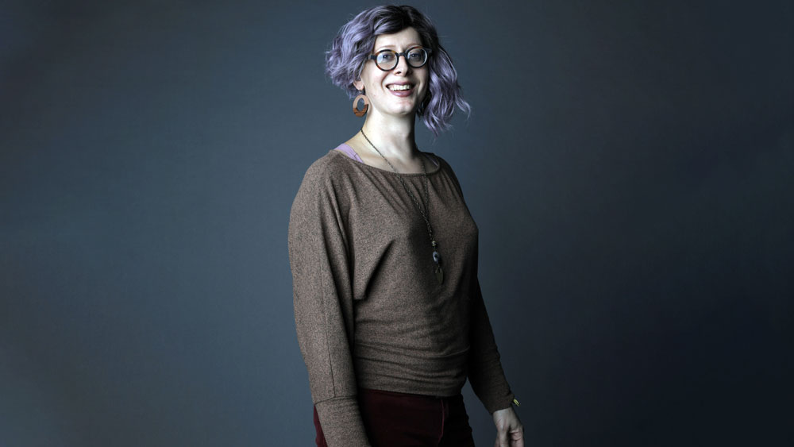
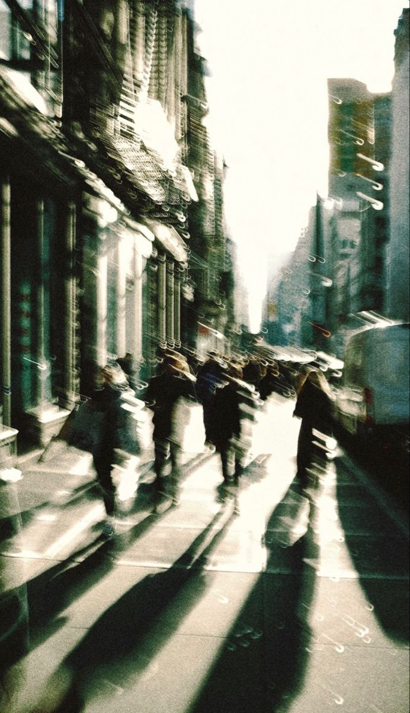
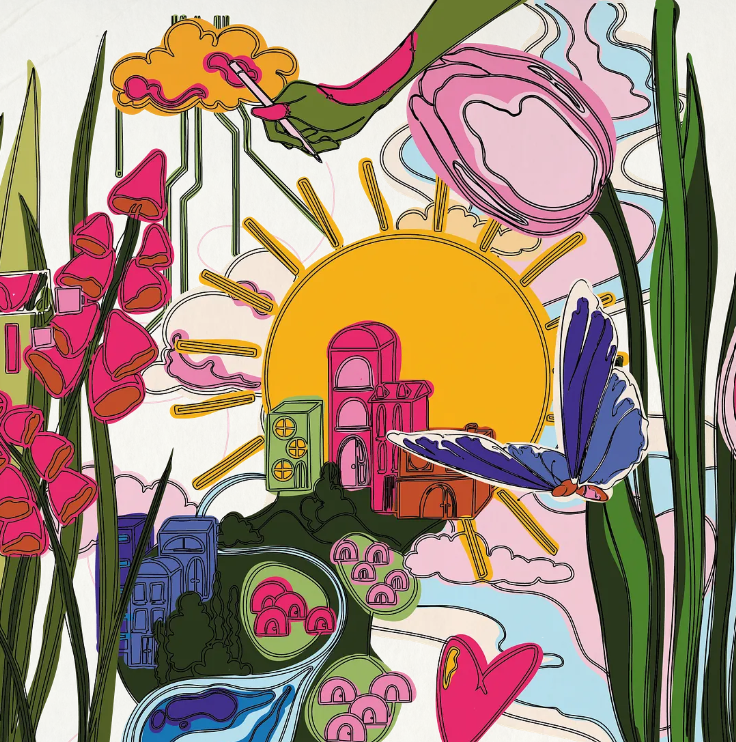

Exploring Projects Rooted in Community and Equity
These projects are stories. They speak of resistance, reclamation, creativity, and collective care. Designed with—not for—communities, each one challenges norms and reimagines space.
Articles
03. March 2020 ART
Design, Power, Justice
In “Design Justice,” Sasha Costanza-Chock explores how design can become a tool for equity, inclusion, and liberation.
Peter Dizikes | MIT News
03. March 2020 ART
What Design for Urban Design Justice
Emerging theories of Design Justice ask architects and planners tocenter the voices of long-oppressed groups. But which kinds of spatialtransformations can concretely inform a just praxis of urban design? Toanswer this question, we compare-in-difference how disadvantagedpeople counter exclusion by designing spaces in Baitu (China), LosAngeles (USA), and Rome (Italy)
Franscesca Piazzoni, Jocelyn Poe, Ettore Santi | School of architecture, University of Liverpool, United Kingdom; bPrice School of Public Policy, University ofSouthern California, Los Angeles, USA; cDepartment of Architecture, College of Environmental Design, UCBerkeley, Berkeley
16. June 2017 VIDEO
Justice by Design | TEDx
Antionette Carroll reclaims design as a tool to challenge inequality and reimagine community power.
TEDx Talks Duration: 12m
16. May 2022 CANADA

La Borda - Cooperative Housing
La Borda is a resident-led housing cooperative in Barcelona that offers affordable, non-speculative homes on public land through collective ownership. Designed by Lacol, the timber building features 28 units with shared spaces and low energy use.
John Hill
20. Jan 2023 EUROPE
Co-Design in Amsterdam
A community-driven effort to resist gentrification through spatial activism and co-design in the Netherlands.
Urban Lab Europe Duration: 9m
03. Jun 2025 GLOBAL
How does the process of community co-design and co-production lead to more inclusive technologies?
Explores the process of community co-design and co-production and how it can lead to more inclusive technology use.
Medium
14. Feb 2022 COMMUNITY
Reclaiming Space through Art
An inspiring story about how murals and street art become tools of cultural survival and local empowerment.
Yes! Media Duration: 11m
20. Oct 2014 COMMUNITY
Why I'm an architect that designs for social impact, not buildings | Liz Ogbu | TEDxMidAtlantic
An inspiring story about how murals and street art become tools of cultural survival and local empowerment.
TEDx Talks Duration: 12m